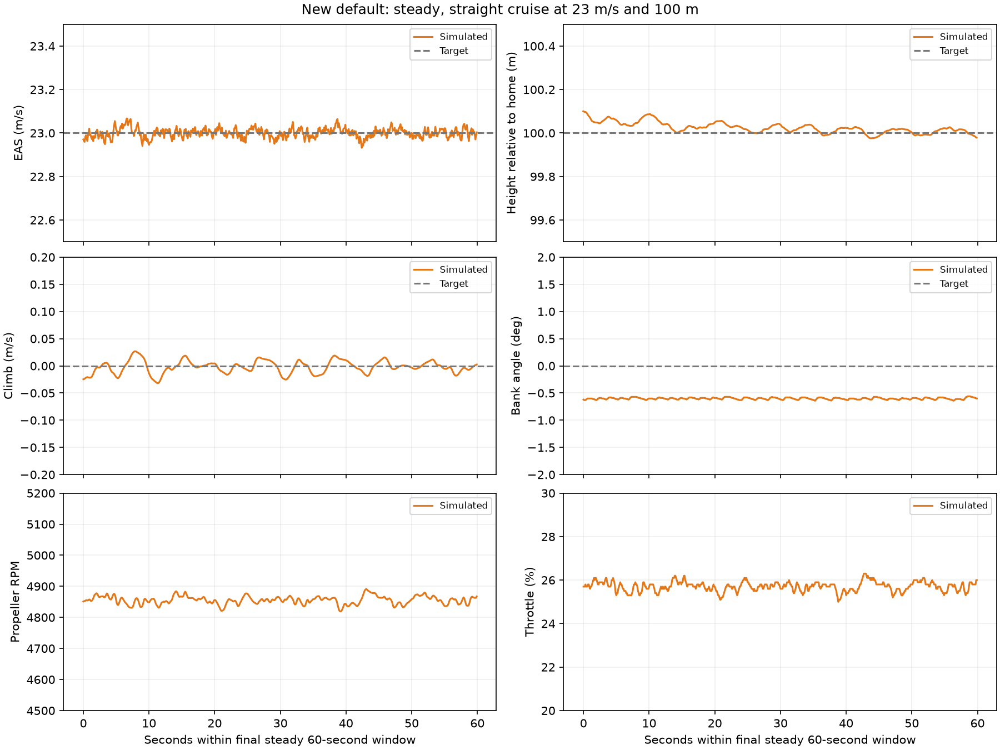
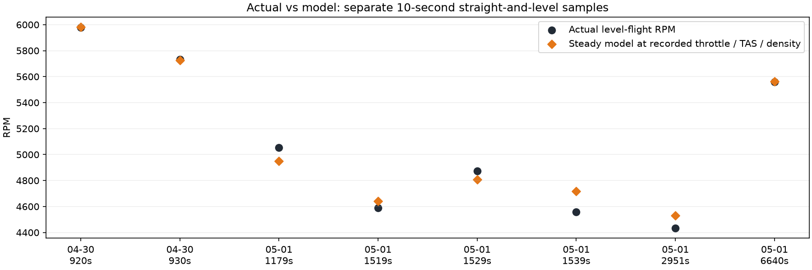

tig_da35_cruise now applies TKOFF_THR_MAX=75 by default through config/models/tig_da35_cruise.parm. The shared BIN snapshot and the other model defaults retain their original takeoff setting. Explicit experimental parameter files override model defaults.
Takeoff is closer, but it does not reproduce the black actual-flight curve. The height, speed, RPM and command histories still differ. The actual aircraft used up to 100% gasoline throttle plus recalled electric assistance; the simulator uses a 75% cap as an empirical scenario adjustment.
| Flight | Peak climb, first 30 s (m/s) | Mean takeoff climb at 10–80 m (m/s) | Seconds to +50 m | Peak RPM, first 60 s |
|---|---|---|---|---|
| Actual May 1 | 4.49 | 2.09 | 37.50 | 8247.00 |
| New default: 75% | 4.52 | 3.05 | 25.50 | 7958.54 |
| Previous default | 8.05 | 6.58 | 14.90 | 8233.76 |
Climb means use takeoff-stage samples between 10 and 80 m height, with different time windows for each flight. Time to +50 m is measured from throttle onset. No curves were shifted or scaled to improve agreement.
Yes within the checked mission. Across five settled level-turn phases at 23/25 m/s and 100/130 m, the largest EAS RMSE is 0.036 m/s and largest height RMSE is 0.091 m. Values use the final 20 seconds of each phase.
The separate straight-level run checks the final 60 seconds of a 6 km waypoint leg: mean EAS 23.000 m/s, mean relative height 100.025 m, climb RMS 0.012 m/s, bank RMS 0.601°, RPM 4855 ± 13, throttle 25.7%. This tests simulated tracking, not a replay of the actual flight.

The engine and its cruise calibration are unchanged. Below are the existing steady-model predictions restricted to the actual straight-and-level windows (turns excluded), evaluated at each window's recorded throttle, TAS and density. May 1 was used for fitting; April 30 is held out. These are cached engine calculations, separate from the coupled mission above.
| Day | Samples | Partition | RPM RMSE | Mean absolute RPM error (%) |
|---|---|---|---|---|
| 2026-04-30 | 2 | Held out | 6.37 | 0.10 |
| 2026-05-01 | 6 | Fit | 93.08 | 1.71 |

Only two held-out level windows are available. Good RPM agreement does not verify thrust or fuel consumption; the earlier held-out climb prediction error remains about 1.5 m/s RMS.
| Configuration | Phase | Target EAS (m/s) | Mean EAS (m/s) | EAS RMSE (m/s) | Target height (m) | Mean height (m) | Height RMSE (m) | Mean throttle (%) | Mean climb (m/s) |
|---|---|---|---|---|---|---|---|---|---|
| Previous default | 3 | 23 | 22.993 | 0.029 | 100 | 100.027 | 0.035 | 25.635 | -0.011 |
| Previous default | 5 | 25 | 24.992 | 0.025 | 100 | 100.053 | 0.057 | 27.095 | -0.013 |
| Previous default | 7 | 23 | 23.001 | 0.024 | 130 | 130.084 | 0.091 | 25.615 | -0.001 |
| Previous default | 8 | 23 | 23.028 | 0.037 | 100 | 100.060 | 0.064 | 25.425 | -0.004 |
| Previous default | 9 | 23 | 22.996 | 0.021 | 100 | 99.920 | 0.085 | 26.490 | -0.003 |
| New default: 75% | 3 | 23 | 22.995 | 0.027 | 100 | 100.036 | 0.041 | 25.675 | -0.008 |
| New default: 75% | 5 | 25 | 24.989 | 0.025 | 100 | 100.052 | 0.056 | 27.100 | -0.013 |
| New default: 75% | 7 | 23 | 23.002 | 0.025 | 130 | 130.081 | 0.091 | 25.645 | 0.000 |
| New default: 75% | 8 | 23 | 23.024 | 0.036 | 100 | 100.076 | 0.081 | 25.445 | -0.005 |
| New default: 75% | 9 | 23 | 22.999 | 0.021 | 100 | 99.919 | 0.084 | 26.520 | 0.000 |
Straight-flight checks · Cruise tracking metrics · Actual level-flight RPM comparisons · Run provenance
Interactive launch: ./run_tiguar.sh --model tig_da35_cruise. Automated flight: python3 scripts/run_sitl.py --model tig_da35_cruise --name my_default75_run --profile --duration 620. The takeoff limit is applied automatically; no --param-file is required.